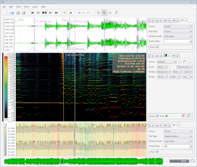

Sonic Visualiser is an application for viewing and analysing the contents of music audio files. 
10th July 2008: Sonic Visualiser 1.3 has been released. Get it here!
The aim of Sonic Visualiser is to be the first program you reach for when want to study a musical recording rather than simply listen to it.
As well as a number of features designed to make exploring audio data as revealing and fun as possible, Sonic Visualiser also has powerful annotation capabilities to help you to describe what you find, and the ability to run automated annotation and analysis plugins in the Vamp analysis plugin format – as well as applying standard audio effects.
We hope Sonic Visualiser will be of particular interest to musicologists, archivists, signal-processing researchers and anyone else looking for a friendly way to take a look at what lies inside the audio file.
Sonic Visualiser is Free Software,
distributed under the GNU General Public
License and available for Linux, OS/X, and Windows. It was
developed at the Centre for
Digital Music at Queen Mary, University of London, by Chris
Cannam (of Rosegarden,
Studio to Go!, DSSI etc).